Blog
Blog
矩阵求导
前言在机器学习中，我们经常会遇到矩阵求导。因此，在这里系统的学习一下矩阵求导。
矩阵求导一般有三种形式：矩阵对矩阵求导；标量对矩阵求导；矩阵对标量求导。
下面，让我们逐一学习吧。
一、矩阵对向量求导
现有长度为 3 的列向量 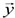
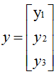
3 X 4 的矩阵 w
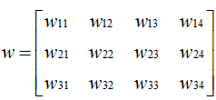
长度为 4 的列向量 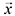
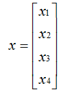
则有 = w,即
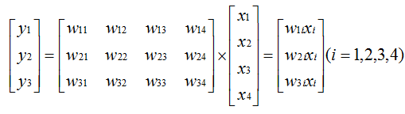
现在我们对 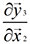 求导，我们知道
 ，因此对 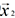
的求导结果为 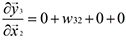
，因此对 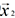
的求导结果为 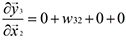根据上面求导的结果，我们可以得到矩阵对向量的偏导为
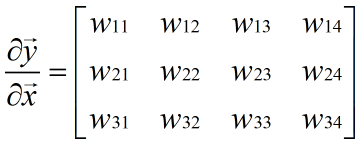
二、向量对向量求导
在讨论向量对向量求导之前，我们需要先弄明白两个概念，即分子布局与分母布局。
现有长度为 m 的列向量 ，长度为 n 的列向量 ，求 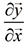会出现两种结果，即 m x n 矩阵与 n x m 矩阵。
分子布局：以分子为列向量，即结果为 m x n 矩阵。
分母布局：以分母为列向量，即结果为 n x m 矩阵。
eg.
分子布局(2 x 3 矩阵)：
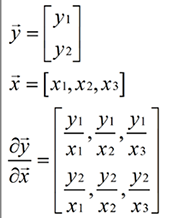
分母布局(3 x 2 矩阵)：
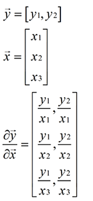
参考教程(这是一个很棒的教程，给博主点赞)